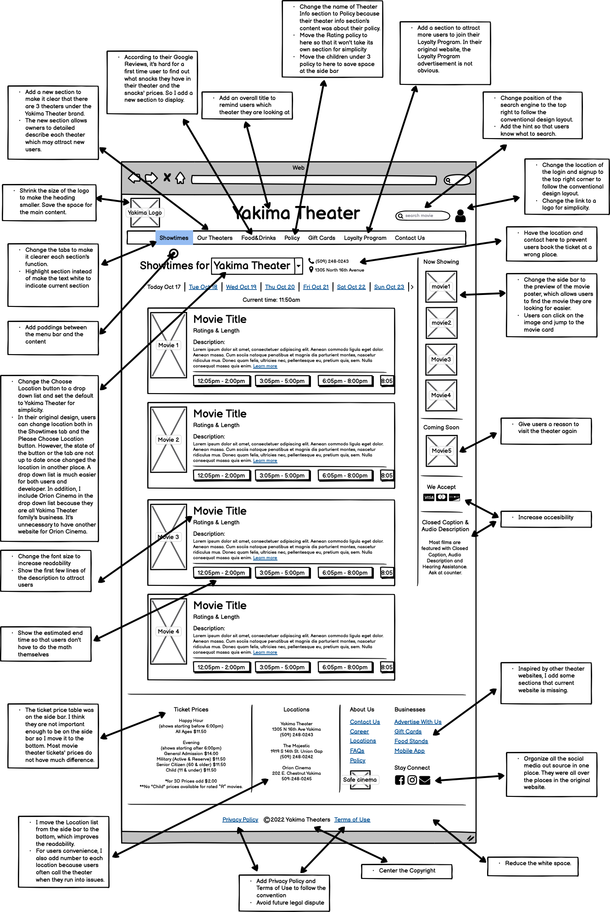
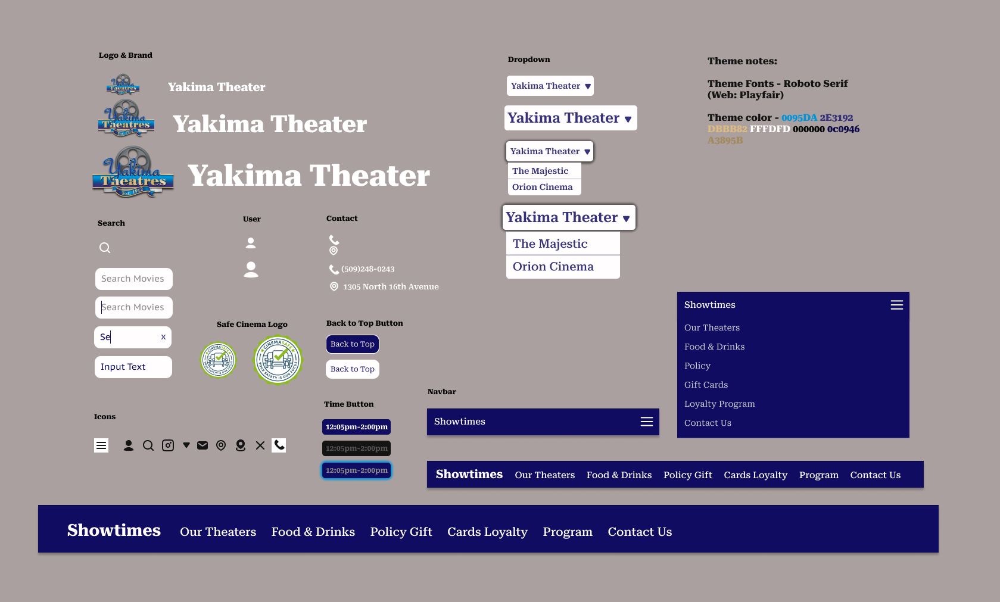
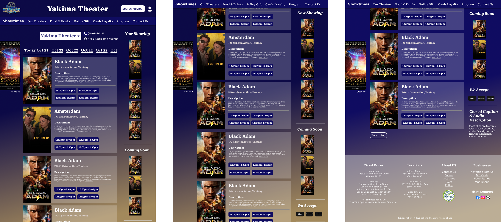
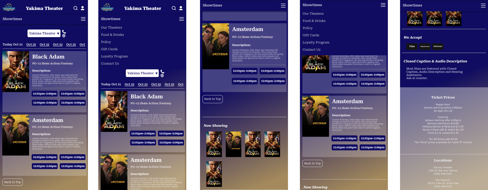
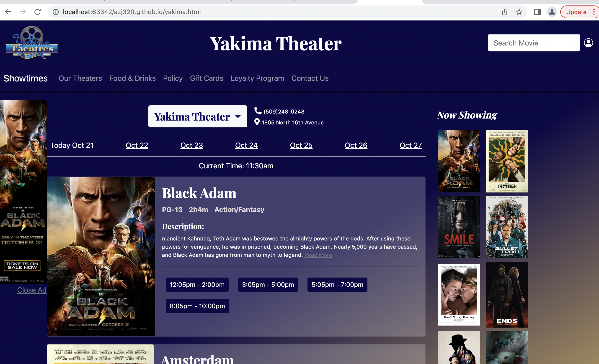
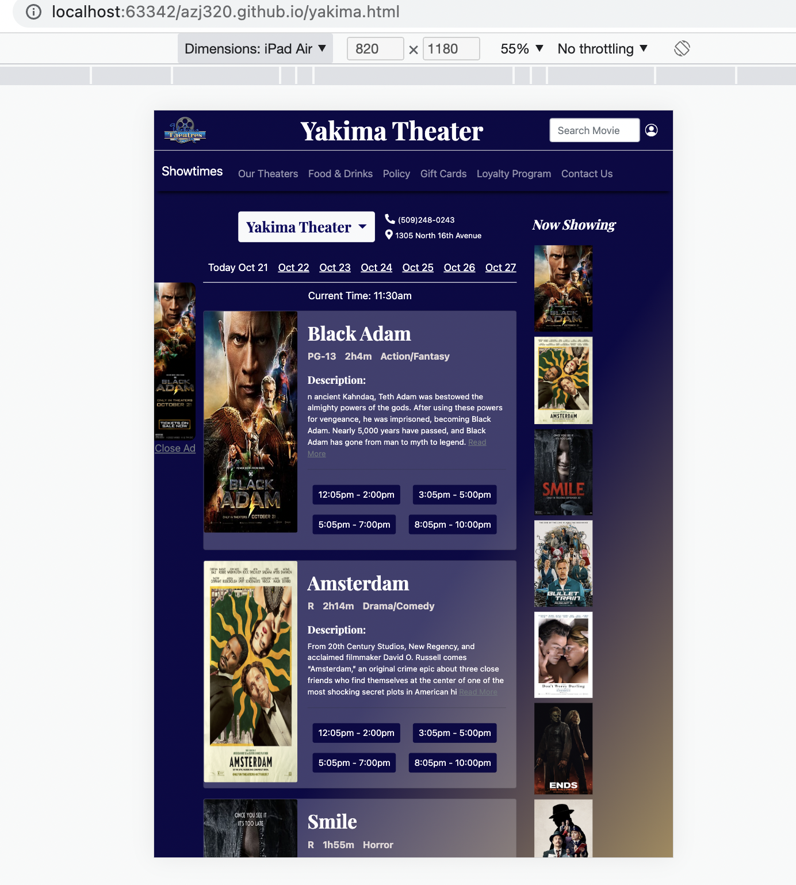
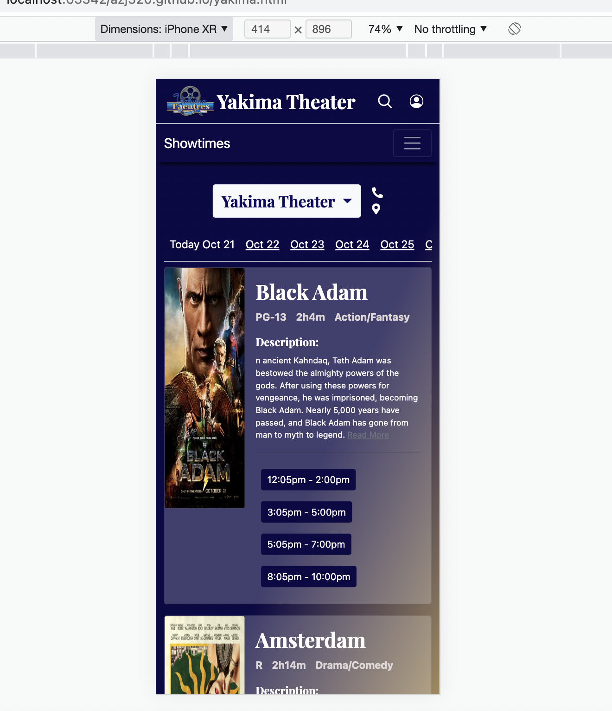

Responsive Redesign
Pick a Web Page
The website I have chosen to redesign is Yakima Theatre's official website. Yakima Theatres is a family- owned chain of movie theaters in Washington state. The theater has been there since 1912 and survived the pandemic. It is my favourite movie theater to visit whenever I am in the area. They have a great staff and nice environment but their website is unattractive and poorly designed. I believe their business could profit from a redesigned website. Link to the web
Finding Problems
Visual
- Their logo on the top banner uses so much space that users must scroll down to view any content.
- There is no padding around the "Please Choose Location" button.
- There is no line or color to delineate each menu option.
- The Facebook logo and "sign in" button are placed in unconventional locations. Users might have trouble finding them.
- The yellow color does not have strong contrast with the blue color or the white color. It is hard to see words written in the yellow color.
- The information on the right hand side bar uses too much space.
Usability, Learnability and etc
- There are three different locations for Yakima Theatres but each has a different name. A first-time user may not understand what each one is.
- Users can only choose two of the three locations under the "Please Choose Location" button. The thrid location has its own website which can be navigated to using a button in the right sidebar.
- It is not clear what time a particular movie showing ends.
- The "Choose Location" button is too close to the "Showtimes" button, making it hard to click.
- The "Choose Location" button and the "Showtimes" button do not synchronize when a location is selected.
- It is not clear what users should search for in the search bar.
- The purpose of the "Theater Info" section is not clear. Users would likely expect to find locations, pictures of the theaters, and other such content, but the page only contains rules and instructions for purchasing tickets.
Accessibility
- Missing first level heading on their home page
- Redundant link in email sign-up section
- The empty link is an error in their code but not shown on the page. There is no button or text that allows user to click on the empty link on their website.
I agree to most of its findings. I found some same errors in the previous section. WAVE also helps me find some errors or warnings I didn't notice earlier.
There is one error that don't really show on the page but in their code
Lo-fi Wireframe
Current Web Design:
Lo-fi for Desktop Layout:
Lo-fi for Mobile Layout:

Lo-fi for Tablet Layout:

Design Guide
Hi-fi Wireframe
Annotated Hi-fi

Hi-fi for Desktop Layout (scrolling behavior)

Hi-fi for Tablet Layout (scrolling behavior)
Hi-fi for Mobile Layout (scrolling behavior)
Responsive Redesign
Click meOr copy link here: https://azj320.github.io/yakima.html
Local Host Desktop View (Chrome)
Responsive Check: tablet (Chrome-ipad air)
Responsive Check: mobile (Chrome-iphone XR)
